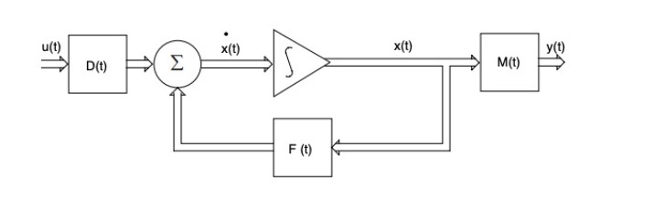

Kalman Filtering
Annotated by: Noah Schliesman
Published on: by R. E. Kalman
Note: The following is still a work in progress. There may be MathJax (LaTeX) errors throughout and I am still in the process of editing this.
Key Equations (derived below):
Optimal Estimate: \( x^*_{t+1|t} = \Phi(t+1;t)x^*(t|t-1) + \Delta^*(t)y(t) \)
Estimation Error: \( x_{t+1|t} = \Phi^*(t+1;t)x(t|t-1) + u(t) \)
Covariance Matrix of the Estimation Error: \( P^*(t) = \text{cov}\{ x_{t+1|t} \} = \mathbb{E}\{ x_{t+1|t}x'_{t+1|t} \} \)
Expected Quadratic Loss:
\[ \sum_{i=1}^{n} \mathbb{E}[ x_i^2(t|t-1) ] = \text{trace}(P^*(t)) \]
Kalman Gain: \( \Delta^* = \Phi(t+1;t)P^*(t)M'(t) \)
\[ \Delta^* = \frac{\Phi(t+1;t)P^*(t)M'(t)}{M(t)P^*(t)M'(t)} \]
Modified State Transition Matrix: \( \Phi^*(t+1;t) = \Phi(t+1;t) - \Delta^*(t)M(t) \)
Future Covariance Matrix of Estimated Error: \( P^*(t+1) = \Phi^*(t+1;t)P^*(t)\Phi'(t+1;t) + Q(t) \)
Abstract Notes:
Kalman begins by attributing the Bode-Shannon representation of random processes and the state transition method of analysis:
Random Processes: Sequences of random variables that illustrate a system’s state over time.
Bode-Shannon Representation: Used to describe frequency response and the quantification of uncertainty. Hendrik Bode showed how systems respond to various inputs in the frequency domain. Claude Shannon provided the theoretical tools to quantify and measure uncertainty in systems.
State Transitions: Involve modeling the evolution of a system’s state from one time step to the next. Here, a state is a set of variables that encapsulate all necessary information about a system’s condition. The State Transition Equation describes how the state of the system changes with time.
Dynamic Systems: Evolve over time according to certain rules. The Kalman filter models these systems using state-space representations.
Kalman provides a filter for stationary, nonstationary, growing memory, and infinite memory processes:
- Stationary Processes: Statistical properties, such as mean and variance, do not change over time. The Kalman filter can leverage these constant properties to make accurate predictions and filter out noise. Such processes include white noise and temperature fluctuations. In such an environment, the statistical behavior of the process can be modeled using a fixed set of parameters.
- Nonstationary Processes: Statistical properties change over time. The Kalman filter can update its parameters dynamically as it processes new data, making it suitable for a wider range of transient applications. Examples include GDP, population growth, and speech signals.
- Growing Memory: The idea that a filter may take into account an increasing amount of past data over time. Through the recursive nature of the Kalman filter, each state estimate is dependent on both the previous and new measurements.
- Infinite Memory: A filter that considers all past data indefinitely, as opposed to a fixed window. Such a system is crucial in systems that must robustly latch on to information. This latching task closely models the experiment performed using recurrent neural networks (RNNs) shown by Bengio et al.[2]
The Kalman filter applies to nonlinear or differential equations for the covariance of the expected error. The filtering problem is the dual of the noise-free regulator problem:
Noise-free Regulator Problem: Involves controlling a system so that it behaves despite the presence of disturbances.
Introduction Notes:
Prediction of random signals, separation of random signals from random noise, and the detection of signals in known form amidst noise are statistical and can all be augmented by a Kalman filter. The foundations of such lie on Wiener and that of the Wiener-Hopf Equation.
Wiener-Hopf Equation: Addresses separating signals from random noise in finding an optimal filter that processes a signal in a way that minimizes the error in the separation of signal from noise.
Consider a process given additional noise \( N(t) \). The observed process \( Y(t) = X(t) + N(t) \). We want to find a linear filter that gives the estimate:
\[ X(t) = \int_{-\infty}^{\infty} h(\tau)Y(t-\tau)d\tau \]
The goal is to minimize the mean squared error (MSE) between \( X(t) \) and \( X(t) \):
\[ MSE = \mathbb{E}[(X(t) - X(t))^2] = 0 \]
The MSE can be expanded as:
\[ MSE = \mathbb{E}[X(t)^2] - 2\mathbb{E}[X(t)X(t)] + \mathbb{E}[X(t)^2] = 0 \]
The first term can be defined by the following autocorrelation function of the signal \( X(t) \), \( R_X(\tau) \):
\[ R_X(\tau) = \mathbb{E}[X(t)X(t+\tau)] \]
For \( \tau = 0 \) (zero-lag):
\[ \mathbb{E}[X(t)^2] = R_X(0) \]
If \( X(t) \) is zero-mean:
\[ \mathbb{E}[X(t)^2] = \text{Var}(X(t)) = R_X(0) \]
Alternatively, in the frequency domain, \( \mathbb{E}[X(t)^2] \) can be computed by integrating the power spectral density (PSD) of \( X(t) \) over all frequencies, \( S_X(f) \):
\[ \mathbb{E}[X(t)^2] = \int_{-\infty}^{\infty} S_X(f)df \]
The cross-correlation function \( R_{xy}(\tau) \) is defined as:
\[ R_{xy}(\tau) = \mathbb{E}[X(t)Y(t+\tau)] \]
The middle term can be expressed using the cross-correlation function between \( X(t) \) and \( Y(t) \), \( R_{xy}(\tau) \):
\[ \mathbb{E}[X(t)X(t)] = \int_{-\infty}^{\infty} h(\tau)R_{XY}(\tau)d\tau \]
The autocorrelation function measures how the value of the process at one time relates to its value at another time:
\[ R_Y(\tau_1 - \tau_2) = \mathbb{E}[Y(t-\tau_1)Y(t-\tau_2)] \]
Thus, the last term can be expressed with impulse responses as:
\[ \mathbb{E}[X(t)^2] = \int_{-\infty}^{\infty} \int_{-\infty}^{\infty} h(\tau_1)h(\tau_2)R_Y(\tau_1 - \tau_2)d\tau_1d\tau_2 \]
Using the PSD approach to \( \mathbb{E}[X(t)^2] \), the equation becomes:
\[ MSE = \int_{-\infty}^{\infty} S_X(f)df - 2\int_{-\infty}^{\infty} h(\tau)R_{XY}(\tau)d\tau + \int_{-\infty}^{\infty} \int_{-\infty}^{\infty} h(\tau_1)h(\tau_2)R_Y(\tau_1 - \tau_2)d\tau_1d\tau_2 \]
The derivative of the MSE with respect to impulse response \( h(t) \) is:
\[ \frac{\delta MSE}{\delta h(\tau)} = -2R_{XY}(\tau) + 2\int_{-\infty}^{\infty} h(\tau')R_Y(\tau - \tau')d\tau = 0 \]
The Wiener-Hopf Integral equation is given as:
\[ R_{XY}(\tau) = \int_{-\infty}^{\infty} h(\tau')R_Y(\tau - \tau')d\tau' \]
It can be noted that for means \( \mu_X \) and \( \mu_Y \):
\[ R_{XX} = \mathbb{E}[X(t) - \mu_X)(X(t + \tau) - \mu_X)] \]
\[ R_{YY} = \mathbb{E}[Y(t) - \mu_Y)(Y(t + \tau) - \mu_Y)] \]
After performing Fourier Transforms on \( h(t) \), \( R_{XX}(t) \), \( R_{YY}(t) \), \( R_{XY}(t) \) (i.e., spectral factorization):
\[ H(f) = \int_{-\infty}^{\infty} h(\tau)e^{-j2\pi fr}dr \]
\[ S_X(f) = \int_{-\infty}^{\infty} R_{XX}(\tau)e^{-j2\pi fr}dr = \int_{-\infty}^{\infty} \mathbb{E}[X(t) - \mu_X)(X(t + \tau) - \mu_X)]e^{-j2\pi fr}d\tau \]
\[ S_Y(f) = \int_{-\infty}^{\infty} R_{YY}(\tau)e^{-j2\pi fr}dr = \int_{-\infty}^{\infty} \mathbb{E}[Y(t) - \mu_Y)(Y(t + \tau) - \mu_Y)]e^{-j2\pi fr}d\tau \]
\[ S_{XY}(f) = \int_{-\infty}^{\infty} R_{XY}(\tau)e^{-j2\pi fr}dr = \int_{-\infty}^{\infty} \mathbb{E}[X(t) - \mu_X)(Y(t + \tau) - \mu_Y)]e^{-j2\pi fr}d\tau \]
In the frequency domain, the Wiener-Hopf equation becomes:
\[ S_{XY}(f) = \int_{-\infty}^{\infty} R_{XY}(\tau)e^{-j2\pi fr}dr = H(f)S_Y(f) \]
The optimal filter can then be solved as:
\[ H(f) = \frac{S_{XY}(f)}{S_Y(f)} \]
Which of course can be expanded as:
\[ H(f) = \frac{\int_{-\infty}^{\infty} \mathbb{E}[X(t) - \mu_X)(Y(t + \tau) - \mu_Y)]e^{-j2\pi fr}d\tau}{\int_{-\infty}^{\infty} \mathbb{E}[Y(t) - \mu_Y)(Y(t + \tau) - \mu_Y)]e^{-j2\pi fr}d\tau} \]
The Wiener-Hopf equation allows us to find the optimal filter that minimizes the mean square error between the estimated signal and the actual signal \( X(t) \).
The objective is to obtain the specification of a linear dynamic system (Wiener filter) that accomplishes the prediction, separation, or detection of a random signal. The Kalman Filter addresses several limitations for solving an optimal linear dynamic system:
- It is not easy to synthesize an optimal filter given its impulse response.
- Computation of this optimal impulse response is involved and exponentially becomes intractable as the problem complexity increases.
- Transient systems like growing-memory filters and nonstationary prediction require new derivations.
- Inherent assumptions about the system can lead to error.
Conditional distributions and expectations are utilized to form means (first-order) and variances (second-order). The Wiener filter finds the best estimate of a signal by projecting it onto the space spanned by observed data, as shown by Doob[3] and Loève[4]:
Orthogonal Projections: Refer to the process of finding the best estimate of a random variable by projecting it onto a subspace of other random variables. The best approximation (i.e., minimize MSE) is achieved via the conditional expectation.
Joseph Doop: Formalized the concept of conditional expectation \( \mathbb{E}[X|Y] \), the expected value of a random variable given another random variable. He introduced martingales, a class of stochastic processes that model fair games. For a martingale \( X(t) \):
\[ X(t) = \mathbb{E}[X(t + 1)|X(t), X(t - 1),...] \]
Michel Loève: Studied orthogonal projections in Hilbert spaces. In such a Hilbert space, the orthogonal projection of a signal onto another signal given projection operator \( P_Y \) can be illustrated as:
\[ X(t) = P_Y[X(t)] \]
Amidst random signals and white noise, linear dynamic systems can be represented using a state system, which entails the information needed to describe the system’s future behavior given the current state. While Wiener filtering previously used statistical methods to minimize the MSE, the state approach is more dynamic and aligns with state-space systems in control theory.
Suppose \( X(t) \) represents the state of the system at time \( t \) and \( Y(t) \) represents the observed, noisy signal. Let \( A(t) \) and \( B(t) \) be matrices describing the system dynamics, \( U(t) \) be a control input, \( W(t) \) be process noise, \( C(t) \) be a matrix describing how the state is observed, and \( V(t) \) be the observation noise. Let \( Q(t) \) be the covariance of the process noise \( W(t) \) and \( R(t) \) be the covariance of the observation noise \( V(t) \).
The state-transition method can be described as:
\[ X(t + 1) = A(t)X(t) + B(t) + U(t) + W(t) \]
The observed equation is then:
\[ Y(t) = C(t)X(t) + V(t) \]
The covariance matrix \( P(t) \) represents the uncertainty in the state estimate \( X(t) \) and can be described using a Riccati equation:
Riccati Equation: A type of nonlinear differential equation that governs the evolution of the covariance matrix of the estimation error. For matrices \( A(t) \), \( B(t) \), \( Q(t) \), and \( R(t) \), the Riccati differential equation is:
\[ \frac{dP(t)}{dt} = A(t)P(t) + P(t)A^T(t) - P(t)B(t)R^{-1}(t)B^T(t)P(t) + Q(t) \]
The first two terms \( A(t)P(t) + P(t)A^T(t) \) describe how the covariance matrix evolves due to the system’s dynamics. The third term \( -P(t)B(t)R^{-1}(t)B^T(t)P(t) \) involves feedback from the measurement, scaled by the inverse of the noise covariance. The last term incorporates the covariance of the process noise \( Q(t) \).
In discrete time, the Riccati difference equation similarly becomes:
\[ P(t + 1) = A(t)P(t)A^T(t) - \left[A(t)P(t)C^T(t)\left(C(t)P(t)C^T(t) + R(t)\right)^{-1}C(t)P(t)A^T(t)\right] + Q(t) \]
The optimal filter coefficients \( K(t) \) can be calculated from the covariance matrix \( P(t) \) as:
\[ K(t) = P(t)C^T(t)\left[C(t)P(t)C^T(t) + R(t)\right]^{-1} \]
As mentioned, this new state-based formulation of the Wiener problem is the dual of the noise-free regulator problem. Such a method has clear applications in complex systems and nonstationary processes.
Key Equations (derived below):
Optimal Estimate: \( x^*_{t+1|t} = \Phi(t+1;t)x^*(t|t-1) + \Delta^*(t)y(t) \)
Estimation Error: \( x_{t+1|t} = \Phi^*(t+1;t)x(t|t-1) + u(t) \)
Covariance Matrix of the Estimation Error: \( P^*(t) = \text{cov}\{ x_{t+1|t} \} = \mathbb{E}\{ x_{t+1|t}x'_{t+1|t} \} \)
Expected Quadratic Loss:
\[ \sum_{i=1}^{n} \mathbb{E}[ x_i^2(t|t-1) ] = \text{trace}(P^*(t)) \]
Kalman Gain: \( \Delta^* = \Phi(t+1;t)P^*(t)M'(t) \)
\[ \Delta^* = \frac{\Phi(t+1;t)P^*(t)M'(t)}{M(t)P^*(t)M'(t)} \]
Modified State Transition Matrix: \( \Phi^*(t+1;t) = \Phi(t+1;t) - \Delta^*(t)M(t) \)
Future Covariance Matrix of Estimated Error: \( P^*(t+1) = \Phi^*(t+1;t)P^*(t)\Phi'(t+1;t) + Q(t) \)
Abstract Notes:
Kalman begins by attributing the Bode-Shannon representation of random processes and the state transition method of analysis:
Random Processes: Sequences of random variables that illustrate a system’s state over time.
Bode-Shannon Representation: Used to describe frequency response and the quantification of uncertainty. Hendrik Bode showed how systems respond to various inputs in the frequency domain. Claude Shannon provided the theoretical tools to quantify and measure uncertainty in systems.
State Transitions: Involve modeling the evolution of a system’s state from one time step to the next. Here, a state is a set of variables that encapsulate all necessary information about a system’s condition. The State Transition Equation describes how the state of the system changes with time.
Dynamic Systems: Evolve over time according to certain rules. The Kalman filter models these systems using state-space representations.
Kalman provides a filter for stationary, nonstationary, growing memory, and infinite memory processes:
- Stationary Processes: Statistical properties, such as mean and variance, do not change over time. The Kalman filter can leverage these constant properties to make accurate predictions and filter out noise. Such processes include white noise and temperature fluctuations. In such an environment, the statistical behavior of the process can be modeled using a fixed set of parameters.
- Nonstationary Processes: Statistical properties change over time. The Kalman filter can update its parameters dynamically as it processes new data, making it suitable for a wider range of transient applications. Examples include GDP, population growth, and speech signals.
- Growing Memory: The idea that a filter may take into account an increasing amount of past data over time. Through the recursive nature of the Kalman filter, each state estimate is dependent on both the previous and new measurements.
- Infinite Memory: A filter that considers all past data indefinitely, as opposed to a fixed window. Such a system is crucial in systems that must robustly latch on to information. This latching task closely models the experiment performed using recurrent neural networks (RNNs) shown by Bengio et al.[2]
The Kalman filter applies to nonlinear or differential equations for the covariance of the expected error. The filtering problem is the dual of the noise-free regulator problem:
Noise-free Regulator Problem: Involves controlling a system so that it behaves despite the presence of disturbances.
Introduction Notes:
Prediction of random signals, separation of random signals from random noise, and the detection of signals in known form amidst noise are statistical and can all be augmented by a Kalman filter. The foundations of such lie on Wiener and that of the Wiener-Hopf Equation.
Wiener-Hopf Equation: Addresses separating signals from random noise in finding an optimal filter that processes a signal in a way that minimizes the error in the separation of signal from noise.
Consider a process given additional noise \( N(t) \). The observed process \( Y(t) = X(t) + N(t) \). We want to find a linear filter that gives the estimate:
\[ X(t) = \int_{-\infty}^{\infty} h(\tau)Y(t-\tau)d\tau \]
The goal is to minimize the mean squared error (MSE) between \( X(t) \) and \( X(t) \):
\[ MSE = \mathbb{E}[(X(t) - X(t))^2] = 0 \]
The MSE can be expanded as:
\[ MSE = \mathbb{E}[X(t)^2] - 2\mathbb{E}[X(t)X(t)] + \mathbb{E}[X(t)^2] = 0 \]
The first term can be defined by the following autocorrelation function of the signal \( X(t) \), \( R_X(\tau) \):
\[ R_X(\tau) = \mathbb{E}[X(t)X(t+\tau)] \]
For \( \tau = 0 \) (zero-lag):
\[ \mathbb{E}[X(t)^2] = R_X(0) \]
If \( X(t) \) is zero-mean:
\[ \mathbb{E}[X(t)^2] = \text{Var}(X(t)) = R_X(0) \]
Alternatively, in the frequency domain, \( \mathbb{E}[X(t)^2] \) can be computed by integrating the power spectral density (PSD) of \( X(t) \) over all frequencies, \( S_X(f) \):
\[ \mathbb{E}[X(t)^2] = \int_{-\infty}^{\infty} S_X(f)df \]
The cross-correlation function \( R_{xy}(\tau) \) is defined as:
\[ R_{xy}(\tau) = \mathbb{E}[X(t)Y(t+\tau)] \]
The middle term can be expressed using the cross-correlation function between \( X(t) \) and \( Y(t) \), \( R_{xy}(\tau) \):
\[ \mathbb{E}[X(t)X(t)] = \int_{-\infty}^{\infty} h(\tau)R_{XY}(\tau)d\tau \]
The autocorrelation function measures how the value of the process at one time relates to its value at another time:
\[ R_Y(\tau_1 - \tau_2) = \mathbb{E}[Y(t-\tau_1)Y(t-\tau_2)] \]
Thus, the last term can be expressed with impulse responses as:
\[ \mathbb{E}[X(t)^2] = \int_{-\infty}^{\infty} \int_{-\infty}^{\infty} h(\tau_1)h(\tau_2)R_Y(\tau_1 - \tau_2)d\tau_1d\tau_2 \]
Using the PSD approach to \( \mathbb{E}[X(t)^2] \), the equation becomes:
\[ MSE = \int_{-\infty}^{\infty} S_X(f)df - 2\int_{-\infty}^{\infty} h(\tau)R_{XY}(\tau)d\tau + \int_{-\infty}^{\infty} \int_{-\infty}^{\infty} h(\tau_1)h(\tau_2)R_Y(\tau_1 - \tau_2)d\tau_1d\tau_2 \]
The derivative of the MSE with respect to impulse response \( h(t) \) is:
\[ \frac{\delta MSE}{\delta h(\tau)} = -2R_{XY}(\tau) + 2\int_{-\infty}^{\infty} h(\tau')R_Y(\tau - \tau')d\tau = 0 \]
The Wiener-Hopf Integral equation is given as:
\[ R_{XY}(\tau) = \int_{-\infty}^{\infty} h(\tau')R_Y(\tau - \tau')d\tau' \]
It can be noted that for means \( \mu_X \) and \( \mu_Y \):
\[ R_{XX} = \mathbb{E}[X(t) - \mu_X)(X(t + \tau) - \mu_X)] \]
\[ R_{YY} = \mathbb{E}[Y(t) - \mu_Y)(Y(t + \tau) - \mu_Y)] \]
After performing Fourier Transforms on \( h(t) \), \( R_{XX}(t) \), \( R_{YY}(t) \), \( R_{XY}(t) \) (i.e., spectral factorization):
\[ H(f) = \int_{-\infty}^{\infty} h(\tau)e^{-j2\pi fr}dr \]
\[ S_X(f) = \int_{-\infty}^{\infty} R_{XX}(\tau)e^{-j2\pi fr}dr = \int_{-\infty}^{\infty} \mathbb{E}[X(t) - \mu_X)(X(t + \tau) - \mu_X)]e^{-j2\pi fr}d\tau \]
\[ S_Y(f) = \int_{-\infty}^{\infty} R_{YY}(\tau)e^{-j2\pi fr}dr = \int_{-\infty}^{\infty} \mathbb{E}[Y(t) - \mu_Y)(Y(t + \tau) - \mu_Y)]e^{-j2\pi fr}d\tau \]
\[ S_{XY}(f) = \int_{-\infty}^{\infty} R_{XY}(\tau)e^{-j2\pi fr}dr = \int_{-\infty}^{\infty} \mathbb{E}[X(t) - \mu_X)(Y(t + \tau) - \mu_Y)]e^{-j2\pi fr}d\tau \]
In the frequency domain, the Wiener-Hopf equation becomes:
\[ S_{XY}(f) = \int_{-\infty}^{\infty} R_{XY}(\tau)e^{-j2\pi fr}dr = H(f)S_Y(f) \]
The optimal filter can then be solved as:
\[ H(f) = \frac{S_{XY}(f)}{S_Y(f)} \]
Which of course can be expanded as:
\[ H(f) = \frac{\int_{-\infty}^{\infty} \mathbb{E}[X(t) - \mu_X)(Y(t + \tau) - \mu_Y)]e^{-j2\pi fr}d\tau}{\int_{-\infty}^{\infty} \mathbb{E}[Y(t) - \mu_Y)(Y(t + \tau) - \mu_Y)]e^{-j2\pi fr}d\tau} \]
The Wiener-Hopf equation allows us to find the optimal filter that minimizes the mean square error between the estimated signal and the actual signal \( X(t) \).
The objective is to obtain the specification of a linear dynamic system (Wiener filter) that accomplishes the prediction, separation, or detection of a random signal. The Kalman Filter addresses several limitations for solving an optimal linear dynamic system:
- It is not easy to synthesize an optimal filter given its impulse response.
- Computation of this optimal impulse response is involved and exponentially becomes intractable as the problem complexity increases.
- Transient systems like growing-memory filters and nonstationary prediction require new derivations.
- Inherent assumptions about the system can lead to error.
Conditional distributions and expectations are utilized to form means (first-order) and variances (second-order). The Wiener filter finds the best estimate of a signal by projecting it onto the space spanned by observed data, as shown by Doob[3] and Loève[4]:
Orthogonal Projections: Refer to the process of finding the best estimate of a random variable by projecting it onto a subspace of other random variables. The best approximation (i.e., minimize MSE) is achieved via the conditional expectation.
Joseph Doop: Formalized the concept of conditional expectation \( \mathbb{E}[X|Y] \), the expected value of a random variable given another random variable. He introduced martingales, a class of stochastic processes that model fair games. For a martingale \( X(t) \):
\[ X(t) = \mathbb{E}[X(t + 1)|X(t), X(t - 1),...] \]
Michel Loève: Studied orthogonal projections in Hilbert spaces. In such a Hilbert space, the orthogonal projection of a signal onto another signal given projection operator \( P_Y \) can be illustrated as:
\[ X(t) = P_Y[X(t)] \]
Amidst random signals and white noise, linear dynamic systems can be represented using a state system, which entails the information needed to describe the system’s future behavior given the current state. While Wiener filtering previously used statistical methods to minimize the MSE, the state approach is more dynamic and aligns with state-space systems in control theory.
Suppose \( X(t) \) represents the state of the system at time \( t \) and \( Y(t) \) represents the observed, noisy signal. Let \( A(t) \) and \( B(t) \) be matrices describing the system dynamics, \( U(t) \) be a control input, \( W(t) \) be process noise, \( C(t) \) be a matrix describing how the state is observed, and \( V(t) \) be the observation noise. Let \( Q(t) \) be the covariance of the process noise \( W(t) \) and \( R(t) \) be the covariance of the observation noise \( V(t) \).
The state-transition method can be described as:
\[ X(t + 1) = A(t)X(t) + B(t) + U(t) + W(t) \]
The observed equation is then:
\[ Y(t) = C(t)X(t) + V(t) \]
The covariance matrix \( P(t) \) represents the uncertainty in the state estimate \( X(t) \) and can be described using a Riccati equation:
Riccati Equation: A type of nonlinear differential equation that governs the evolution of the covariance matrix of the estimation error. For matrices \( A(t) \), \( B(t) \), \( Q(t) \), and \( R(t) \), the Riccati differential equation is:
\[ \frac{dP(t)}{dt} = A(t)P(t) + P(t)A^T(t) - P(t)B(t)R^{-1}(t)B^T(t)P(t) + Q(t) \]
The first two terms \( A(t)P(t) + P(t)A^T(t) \) describe how the covariance matrix evolves due to the system’s dynamics. The third term \( -P(t)B(t)R^{-1}(t)B^T(t)P(t) \) involves feedback from the measurement, scaled by the inverse of the noise covariance. The last term incorporates the covariance of the process noise \( Q(t) \).
In discrete time, the Riccati difference equation similarly becomes:
\[ P(t + 1) = A(t)P(t)A^T(t) - \left[A(t)P(t)C^T(t)\left(C(t)P(t)C^T(t) + R(t)\right)^{-1}C(t)P(t)A^T(t)\right] + Q(t) \]
The optimal filter coefficients \( K(t) \) can be calculated from the covariance matrix \( P(t) \) as:
\[ K(t) = P(t)C^T(t)\left[C(t)P(t)C^T(t) + R(t)\right]^{-1} \]
As mentioned, this new state-based formulation of the Wiener problem is the dual of the noise-free regulator problem. Such a method has clear applications in complex systems and nonstationary processes.
Notation Convention Notes:
It is useful to deal with discrete dynamic systems where observations are made at time \( t_n \).
Vectors are denoted by a bar above letters (e.g., \( \bar{a} \), \( \bar{b} \), \( \bar{x} \), \( \bar{y} \)). For example, \( \bar{x} = [x_1, x_2, ..., x_n]^T \).
Matrices are denoted by a bar above capital letters (e.g., \( \bar{A} \), \( \bar{B} \), \( \bar{X} \), \( \bar{Y} \)). The transpose of a matrix is denoted by ‘. The expression \( \bar{x} \cdot \bar{y}' \) results in a matrix with elements \( x_i y_j \).
The scalar product of two vectors measures correlation and is obtained by multiplying corresponding vector components and summing the results:
\[ \bar{x}' \cdot \bar{y} = \sum_{i=1}^{n} x_i y_i = \bar{y}' \cdot \bar{x} \]
A quadratic form is an expression involving a vector and a matrix that results in a scalar:
\[ \bar{x}' \cdot \bar{Q} \cdot \bar{x} = \sum_{i,j=1}^{n} x_i q_{ij} x_j \]
The expectation operator denotes the expected value of a random vector \( \bar{x} \):
\[ \mathbb{E}[\bar{x}] = \mathbb{E}\bar{x} \]
For a discrete random variable \( X \), the expected value is calculated by summing over all possible values weighted by probability of occurrence. Given \( x_i \), the possible values that random variable \( X \) can take, the expected value is:
\[ \mathbb{E}[X] = \sum_{i} x_i \cdot P(X = x_i) \]
Kalman’s List of Symbols:
Kalman provides the following list of symbols for ease of reference. Let:
- \( t \): Time in general, present time
- \( t_0 \): Time at which observations start
- \( x_1(t), x_2(t) \): Basic random variables
- \( y(t) \): Observed random variable
- \( x^*_1(t_1|t) \): The optimal estimate of \( x_1(t_1) \) given \( y(t_0), ..., y(t) \)
- \( L \): Loss function
- \( \epsilon \): Estimation error (random variable)
- \( \mathcal{Y}(t) \): The linear manifold generated by the random variables \( y(t_0), ..., y(t) \)
- \( x(t_1|t) \): The orthogonal projection of \( x(t_1) \) onto \( \mathcal{Y}(t) \)
- \( \Phi(t+1; t) \): Transition matrix
- \( Q(t) \): Covariance matrix of noise
Optimal Estimates:
Consider an original signal of interest \( x_1(t) \) and noise \( x_2(t) \) such that the observable signal is given by:
\[ y(t) = x_1(t) + x_2(t) \]
Here, the challenge is to estimate the signal \( x_1(t) \) at some time \( t_1 \) based on the observed data \( y(t) \) up to the current time \( t \). The Kalman approach unifies interpolation, filtering, and prediction:
- Data smoothing or interpolation: If \( t_1 < t \), the goal is to estimate a past value of a signal based on later observations.
- Filtering: If \( t_1 = t \), the goal is to estimate the current value of the signal using all past observations up to time \( t \).
- Prediction: If \( t_1 > t \), the goal is to predict a future value of the signal based on observations made up to time \( t \).
In the context of estimation, the signal \( x_1(t) \), noise \( x_2(t) \), and observed data \( y(t) \) can be treated as random processes. Given a set of observed values of the random variable \( \eta(t_0), ..., \eta(t) \), the conditional probability distribution for the values of the signal \( x_1(t_1) \) can be determined at any time \( t_1 \). Such a conditional probability distribution is defined as:
\[ \Pr(x_1(t_1) \leq \xi_1 | y(t_0) = \eta(t_0), ..., y(t) = \eta(t)) = F(\xi_1) \]
Here, \( y(t_0) = \eta(t_0), ..., y(t) = \eta(t) \) are the observed values of the random variable \( y(t) \) at various times. Thus, any statistical estimate of \( x_1(t_1) \) is based on this distribution \( F(\xi_1) \). Such a conditional distribution can, in turn, allow the computation of the deterministic function \( X(t_1|t) \), which is the estimate of \( x_1(t_1) \) given observations up to time \( t \).
We’ve established that \( X(t_1) \) is an estimate of the unknown signal \( x_1(t_1) \) and is derived given the observable data \( y(t_0), ..., y(t) \). Such an estimate is still treated as a random variable because it is based on other random variables.
The estimation error \( \epsilon \) is the difference between the actual value \( x_1(t_1) \) and the estimated value \( X(t_1) \):
\[ \epsilon = x_1(t_1) - X(t_1) \]
The loss function \( L(\epsilon) \) quantifies how costly such an estimation error is. This helps in optimizing the estimation process by minimizing the expected loss. In the case that the estimate is perfect:
\[ L(0) = 0 \text{ where } \epsilon = 0 \]
The loss function should be non-decreasing such that as the error increases, the loss should increase or stay the same. The loss function is symmetric around zero so that overestimating or underestimating by the same amount incurs the same penalty:
\[ L(\epsilon) = L(-\epsilon) \]
The loss function is also positive for any non-zero error, reflecting some penalty. For a positive constant \( a \), some examples of loss functions include:
- Quadratic Loss: \( L(\epsilon) = a\epsilon^2 \), where the penalty grows quadratically with the error.
- Absolute Loss: \( L(\epsilon) = a|\epsilon| \), where the penalty grows linearly with the error.
- Higher-Order Loss: \( L(\epsilon) = a\epsilon^4 \), where the penalty grows more rapidly for larger errors.
- Exponential Loss: \( L(\epsilon) = a(1 - e^{-\epsilon^2}) \), which increases rapidly for larger errors but flattens out for small errors.
The choice of a loss function reflects the specific goals and constraints of the estimation problem. The goal of Kalman filtering is to select \( X_1(t_1) \) such that it minimizes the average loss or risk. In other words, we want to minimize the expected value of the loss function:
\[ \min \mathbb{E}[L(x_1(t_1) - X_1(t_1))] \]
Crucially, such an expectation must take into account the observations \( y(t_0), ..., y(t) \). This yields a nested expectation to model the conditional loss:
\[ \mathbb{E}[L(x_1(t_1) - X_1(t_1))] = \mathbb{E}\left[\mathbb{E}[L(x_1(t_1) - X_1(t_1))| y(t_0), ..., y(t)]\right] \]
Since the outer expectation doesn’t depend on the estimate \( X_1(t_1) \), it is sufficient to minimize the inner expectation. This yields a more computable formulation of the objective function:
\[ \min \mathbb{E}[L(x_1(t_1) - X_1(t_1))| y(t_0), ..., y(t)] \]
The optimal estimate \( x^*_1(t_1) \) that minimizes the expected loss is simply the conditional expectation of \( x_1(t_1) \) given the observations \( y(t_0), ..., y(t) \). Such is true under the following criterion:
- Symmetry: The conditional distribution \( F(\xi_1) \) must be symmetric about its mean \( x_1(t_1) \). For any deviation \( \delta \xi \) from the mean, the probability that the conditional expectation is less than the deviation below the mean \( \xi - \delta \) is the same as the probability of that conditional expectation being greater than deviation above the mean \( \xi + \delta \). It follows then that \( F(\xi - \xi) = 1 - F(\xi + \xi) \).
- Convexity: The conditional distribution \( F(\xi_1) \) is convex for values less than the mean \( \xi \). This ensures that there is one prominent mode where most of the probability mass is concentrated (i.e., the mean). This condition is expressed as \( F(\lambda\xi_1 + (1-\lambda)\xi_2) \leq \lambda F(\xi_1) + (1-\lambda)F(\xi_2) \).
Under these conditions, it follows using Sherman’s probability theory[5] that the random variable \( x^*_1(t_1) \) that minimizes the average loss is the conditional expectation:
\[ x^*_1(t_1) = \mathbb{E}[x_1(t_1)| y(t_0), ..., y(t)] \]
Consider the case of a quadratic loss function \( L(\epsilon) = \epsilon^2 \). Kalman notes that the above equation is true even in cases when symmetry and convexity are broken. Note that the above equation, when expanded to quadratic loss, becomes:
\[ \mathbb{E}[(x_1(t_1) - X_1(t_1))^2 | y(t_0), ..., y(t)] \]
This can be expanded as:
\[ \mathbb{E}[x_1^2(t_1) | y(t_0), ..., y(t)] - 2X_1(t_1)\mathbb{E}[x_1(t_1) | y(t_0), ..., y(t)] + X_1^2(t_1) \]
The first term is the expected value of the square of \( x_1(t_1) \), conditioned on the observed values, and represents the average squared value of the true state over all realizations. The second term is a linear estimate that represents the interaction between the estimate \( X_1(t_1) \) and the expected value of the state. The last term is the square of the estimate \( X_1^2(t_1) \) and represents the penalty of the estimate itself.
When we differentiate the expanded expression with respect to \( X_1(t_1) \) and set it to zero, we find the estimated value that minimizes the expected error. Such a derivative is:
\[ 2\mathbb{E}[x_1(t_1)| y(t_0), ..., y(t)] + 2X_1(t_1) = 0 \]
Which in turn yields:
\[ X_1(t_1) = \mathbb{E}[x_1(t_1)| y(t_0), ..., y(t)] \]
Kalman ends the section by noting that these theorems apply to vector-valued estimation problems, which are inherently much more applicable.
Orthogonal Projections:
Unless the processes \( x_1(t_1) \) and \( x_2(t_2) \) are Gaussian, calculating the optimal estimate \( x_1(t_1|t) \) given only the observed data \( y(t) \) is impossible. Let’s consider this Gaussian approach with a quadratic loss function \( L(\epsilon) = \epsilon^2 \), where the estimate is a linear function of the observed random variables. For Gaussian processes with linear estimation, the optimal estimate is the same as the one you’d get with a quadratic loss function. Linear estimation can be improved by nonlinear estimation when the random processes are non-Gaussian.
Consider the real-valued set of observed random variables \( y(t_0), ..., y(t) \). Kalman represents any linear combination of the observed random variables given coefficients \( a_i \) from time \( t_0 \) to time \( t \) as:
\[ \sum_{i=t_0}^{t} a_i y_i(t) \]
The set of these linear combinations forms a linear manifold (vector space) denoted by \( \mathcal{Y}(t) \). This space contains all possible vectors that can be formed by taking linear combinations of the observed data and represents all the possible observation outcomes. Such a manifold can be seen as a finite-dimensional subspace within the larger space of all possible observations.
Note that any vectors \( u, v \) in \( \mathcal{Y}(t) \) is a linear combination of the observed random variables. Thus, these vectors are orthogonal if their expectation is 0:
\[ \mathbb{E}[uv] = 0 \]
Using Gram-Schmidt to create an orthonormal basis in \( \mathcal{Y}(t) \), Kalman creates a set of vectors \( \{e_{t_0}, ..., e_t\} \) that are orthogonal to each other and have unit length. Such an orthonormal basis follows that:
\[ \mathbb{E}[e_i e_j] = \delta_{ij} = \begin{cases} 0 & \text{if } i \neq j \\ 1 & \text{if } i = j \end{cases} \]
Any vector \( x \) in \( \mathcal{Y}(t) \) can be expressed as a unique linear combination of these orthonormal basis vectors:
\[ x = \sum_{i=t_0}^{t} a_i e_i \]
To determine the coefficients \( a_i \), Kalman projects the vector \( x \) onto the basis vectors \( e_j \):
\[ \mathbb{E}[xe_j] = \mathbb{E}\left[\sum_{i=t_0}^{t} a_i e_i e_j\right] = \sum_{i=t_0}^{t} a_i \delta_{ij} = a_j \]
Given that \( x \) lies within a linear manifold \( \mathcal{Y}(t) \) of the observations and \( x \) is orthogonal to that manifold, the random variable \( x \) is described as the linear combination:
\[ x = x + x \]
Since \( x \) is the orthogonal projection of \( x(t_1) \) onto \( \mathcal{Y}(t) \), it follows that:
\[ x = \sum_{i=t_0}^{t} \mathbb{E}[xe_i]e_i + x \]
Such an orthogonal projection minimizes the quadratic loss function. If you were to estimate \( x \) using any other vector \( w \), the quadratic loss would not be optimal:
\[ \mathbb{E}[(x - w)^2] = \mathbb{E}[(x + x - w)^2] = \mathbb{E}[(x - x) + (x - w)]^2 \]
Since \( x \) is orthogonal to every vector in the linear manifold, including \( x - w \), Kalman applies the Pythagorean theorem to deduce:
\[ \mathbb{E}[(x - w)^2] = \mathbb{E}[(x - x)^2] + \mathbb{E}[(x - w)^2] \geq \mathbb{E}[(x - x)^2] \]
Due to this orthogonality, the error is minimized when \( w = x \). Analytically, Kalman has shown that \( x \) is the optimal orthogonal projection to minimize the expected squared error among all possible approximations within the manifold. This generates the following:
Given two zero-mean random processes \( \{x(t)\} \) and \( \{y(t)\} \) with observed random variables \( y(t_0), ..., y(t) \), the optimal estimate of \( x_1(t_1|t) \) given these observations is the orthogonal projection of \( x(t_1) \) onto the linear manifold generated by these observed variables \( \mathcal{Y}(t) \). Such a result assumes:
- All random processes are Gaussian (zero-mean) [orthogonal random variables are independent]
- The optimal estimate is a linear function of the observed random variables
- The loss function is quadratic
Kalman extends this formulation to vector-valued random variables and notes that the optimal estimate can be viewed as the linear combination of all previous observations (i.e., the output of a linear filter). However, just knowing the impulse response does not solve the estimation problem, and more explicit formulas are necessary.
Models for Random Processes:
While primary sources of random phenomena model a Gaussian distribution, there is often a statistical correlation between signals over time. A random function of time can be thought of as the output of a dynamic system that is excited by an independent Gaussian process. Since Gaussian random signals are invariant under linear transformations, the underlying dynamic system can be assumed to be linear.
System dynamics can be encapsulated into states, which summarize everything necessary about the past behavior to predict the future in a minimal set of variables. State transitions describe how the system evolves over time. Kalman provides the general description of a linear dynamic system. Let:
- \( x(t) \): The state vector of a system
- \( u(t) \): The input vector to the system
- \( F(t) \): A matrix representing the system dynamics
- \( D(t) \): A matrix representing how the input affects the state change
- \( y(t) \): The output vector of the system
- \( M(t) \): A matrix representing the relationship between the state and the output
A linear dynamic system is governed by the following equations:
\[ \frac{dx}{dt} = F(t)x + D(t)u(t) \]
\[ y(t) = M(t)x(t) \]
If the matrices \( F(t) \), \( D(t) \), and \( M(t) \) are time-invariant, the system is stationary. Conversely, the system is considered time-varying or non-stationary. Consider the figure below, where signal flows and operations are vectorized:

Since signal flows are vectorized, there are integrators for each component of the state vector \( x(t) \). The feedback loop defines the system’s dynamics by controlling how the current state influences its rate of change.
Assume the linear dynamic system is stationary (i.e., the matrices \( F(t) \), \( D(t) \), and \( M(t) \) are time-invariant). Similarly, assume that the input does not vary within a sampling interval but can change from one interval to the next. These assumptions yield a discrete-time system where:
\[ u(t + \tau) = u(t); 0 \leq t < 1, t = 0, 1, ... \]
Consider \( \Phi(1) \), a matrix that describes how the state evolves over one time step with zero input \( u(t) \). The matrix exponential \( \exp(F) \) is the solution to the following linear differential equation:
\[ \frac{dx(t)}{dt} = Fx(t) \]
Which, given an initial state \( x(0) \), yields the homogeneous solution:
\[ x_h(t) = \exp(Ft)x(0) \]
Here the matrix exponential given square matrix \( F \) and identity matrix \( I \) is:
\[ \exp(F) = I + F + \frac{F^2}{2!} + \frac{F^3}{3!} + ... = \sum_{i=0}^{\infty} \frac{F^i}{i!} \]
In the discrete case, this solution can be extended to:
\[ x_h(1) = \exp(F)x(0) \]
Intuitively, the state transition matrix becomes:
\[ x(t + 1) = \exp(F)x(t) = \Phi(1)x(t) \]
\[ \Phi(1) = \exp(F) = \sum_{i=0}^{\infty} \frac{F^i}{i!} \]
To find the particular solution of the linear differential equation, Kalman integrates the effect of the input over time:
\[ x_p(t) = \int_{0}^{t} \exp(F(t-\tau))Du(\tau)d\tau \]
The discrete system can be sampled using \( \Delta t = t = 1 \). Also, since the input is constant during each sampling period, we can factor it out of the integral:
\[ x_p(1) = Du(0)\int_{0}^{1} \exp(F(1-\tau))d\tau \]
For \( \tau' = 1 - \tau \), Kalman determines \( \Delta(1) \), a matrix that captures the effect of the input on the state over one time step:
\[ \Delta(1) = \int_{0}^{1} \exp(F\tau')d\tau' D \]
This yields the following form of a linear discrete-dynamic system:
\[ x(t + 1) = \Phi(1)x(t) + \Delta(1)u(t); t = 0, 1, ... \]
\[ x(t + 1) = \sum_{i=0}^{\infty} \frac{F^i}{i!} x(t) + \int_{0}^{1} \exp(F\tau')d\tau' D u(t); t = 0, 1, ... \]
In other words, the state of the system at the next time step is determined both by the current state and the input. The matrix \( \Delta(1) \) modifies the input’s influence, while the state transition matrix \( \Phi(t + 1; t) \) decides how the state evolves over time. The output \( y(t) \) is derived from the current state using matrix \( M(t) \).
Kalman extends to the nonstationary case where system matrices change with time. Resultantly, the state transition matrix \( \Phi(t + 1; t) \) and the input effect matrix \( \Delta(1) \) vary with time. This yields the system shown above, with state equations:
\[ x(t + 1) = \Phi(t + 1)x(t) + \Delta(1)u(t); t = 0, 1, ... \]
\[ y(t) = M(t)x(t) \]
Such nonstationary systems depend on the specific form of \( F(t) \) over time. Kalman mentions that in stationary systems, one can express \( \exp(Ft) \) using the Laplace transform. Since \( F(t) \) is time-dependent in nonstationary systems, such a closed-form solution is not possible.
Consider three time points \( s \), \( r \), and \( t \). The state transition over the interval from \( t \) to \( s \) can be chained as:
\[ \Phi(t; s)\Phi(s; r) = \Phi(t; r) \]
Similarly, the inverse rule states that:
\[ \Phi^{-1}(t; s) = \Phi(s; t) \]
For a vector-valued, independent, zero-mean Gaussian random process \( \{u(t)\} \), the state of a random phenomenon can be modeled by:
\[ x(t + 1) = \Phi(t + 1; t)x(t) + u(t); \]
Kalman notes three properties of such a random process \( \{u(t)\} \):
- \( \mathbb{E}[u(t)] = 0 \, \forall t \): Since the expected value of \( u(t) \) is zero, the noise has no bias.
- \( \mathbb{E}[u(t)u'(s)] = 0 \text{ if } t \neq s \): The noise at different time steps is independent.
- \( \mathbb{E}[u(t)u'(t)] = G(t) \): The covariance matrix \( G(t) \) describes the magnitude and correlation of the noise within the same time step.
The state \( x(t) \) inherits the correlation structure imposed by the dynamics of the system and the input process \( u(t) \). In the steady-state case, Kalman neglects the initial state \( x(t_0) \) and expresses the state \( x(t) \) as:
\[ x(t) = \sum_{r=-\infty}^{t-1} \Phi(t; r + 1)u(r) \]
For times \( t \geq s \), the covariance of the state \( x(t) \) with \( x(s) \) is given by:
\[ \mathbb{E}[x(t)x'(s)] = \sum_{r=-\infty}^{s-1} \Phi(t; r + 1)Q(r)\Phi'(s; r + 1) = \sum_{r=-\infty}^{s-1} \Phi(t; r + 1)\mathbb{E}[u(r)u'(r)]\Phi'(s; r + 1) \]
Here, \( Q(r) \) is the covariance matrix of the input noise \( u(r) \):
\[ Q(r) = \mathbb{E}[u(r)u'(r)] \]
Generally, instead of knowing the system dynamics \( \Phi(t + 1; t) \) and the properties of the input noise \( u(t) \), one might only have access to the covariance matrix \( Q(t) \) (or an estimate of it based on data). The challenge here is to infer the system dynamics \( \Phi(t + 1; t) \) and the statistical properties of the noise from this covariance. Such a problem is directly linked to the Wiener problem. Such an approach relies on primary, independent, zero-mean random sources with linear dynamic systems.
Solution of the Wiener Problem:
Recall that the goal is to estimate the optimal estimate \( x^*_t(t_1|t) \) given the observed values \( y(t_0), ..., y(t) \) by minimizing the expected loss. Such an estimate is based on the following dynamic model. Let:
- \( x(t) \): The state vector at time \( t \)
- \( u(t) \): An independent Gaussian random process with zero mean
- \( \Phi(t+1; t) \): The transition matrix that governs the evolution of the state
- \{ y(t) \): The observed data vector
- \( M(t) \): The measurement matrix that maps the state vector to the observations
The dynamic system in Kalman’s solution of the Wiener problem is then formulated as:
\[ x(t + 1) = \Phi(t + 1; t)x(t) + u(t) \]
\[ y(t) = M(t)x(t) \]
As mentioned, such a model describes filtering, prediction, data smoothing, and reconstructing state variables given noisy observations.
The first step is to utilize a recursive algorithm to estimate the state vector \( x(t_1) \). This is attained by projecting \( x(t_1) \) onto the linear manifold formed by the observed random variables \( \mathcal{Y}(t) \). As proved above, this projection minimizes the estimation error.
Suppose the observations \( y(t_0), ..., y(t-1) \) have already been measured. When a new measurement \( y(t) \) is taken, it can be decomposed into the following:
- Component that lies within the known manifold \( \mathcal{Y}(t-1) \).
- Component that is orthogonal to the known manifold \( \mathcal{Y}(t-1) \). This component represents new information added by the latest measurement \( Z(t) = y(t|t-1) = y(t) - y(t|t-1) \). When the residual \( Z(t) \) is zero, the new measurement does not provide any additional information such that \( \mathcal{Y}(t) = \mathcal{Y}(t-1) \).
Via induction, Kalman notes that \( x^*_{t_1-1|t-1} \) is already known. The optimal estimate \( x^*_{t_1|t} \) at time \( t_1 \) given a new measurement at time \( t \) is the sum of the projection of \( x(t_1) \) on the previously known manifold \( \mathcal{Y}(t-1) \) and the projection of \( x(t_1) \) on the new information space \( Z(t) = y(t|t-1) = y(t) - y(t|t-1) \):
\[ x^*_{t_1|t} = \mathbb{E}[x(t_1)|\mathcal{Y}(t)] = \mathbb{E}[x(t_1)|\mathcal{Y}(t-1)] + \mathbb{E}[x(t_1)|Z(t)] = \mathbb{E}[x(t_1)|\mathcal{Y}(t-1)] + \mathbb{E}[x(t_1)|y(t) - y(t|t-1)] \]
Using the dynamic model, Kalman converts the prediction state based on \( t-1 \) as a state transition matrix projection \( \Phi(t_1; t+1) \) with the expected value of the process noise given the previous data \( \mathbb{E}[u(t_1-1)|\mathcal{Y}(t-1)] \):
\[ \mathbb{E}[x(t_1)|\mathcal{Y}(t-1)] = \Phi(t_1; t+1)x^*_{t_1-1|t-1} + \mathbb{E}[u(t_1-1)|\mathcal{Y}(t-1)] \]
This yields the expanded form of the optimal state estimation \( x^*_{t_1|t} \):
\[ x^*_{t_1|t} = \Phi(t_1; t+1)x^*_{t_1-1|t-1} + \mathbb{E}[u(t_1-1)|\mathcal{Y}(t-1)] + \mathbb{E}[x(t_1)|y(t) - y(t|t-1)] \]
Consider the case where \( t_1 = t + s, s \in \mathbb{Z}, s \geq 0 \). For some \( t_1 - 1 \), the process noise at time \( u(t_1-1) \) is independent of all previous observations \( \mathcal{Y}(t-1) \). Such a process noise is orthogonal to the linear manifold \( \mathcal{Y}(t-1) \). In such a case \( \mathbb{E}[u(t_1-1)|\mathcal{Y}(t-1)] = 0 \), and the state estimate simplifies to:
\[ x^*_{t_1|t} = \Phi(t_1; t+1)x^*_{t_1-1|t-1} + \mathbb{E}[x(t_1)|y(t) - y(t|t-1)] \]
For the case where \( s < 0 \), the process noise \( u(t_1-1) \) is not independent of the previous observations, which complicates the solution. Kalman’s analysis primarily considers the case \( t_1 \geq t \).
The state update equation now combines the predicted state and the innovation correction:
\[ x^*_{t+1|t} = \Phi(t+1; t)x^*(t|t-1) + \Delta^*(t)[y(t|t-1)] \]
Kalman represents the expectation of a new state \( x(t) \) given the innovation \( Z(t) = y(t|t-1) = y(t) - y(t|t-1) \) and the existing state \( x(t-1) \). The Kalman gain \( \Delta(t) \) modifies how much the estimate is adjusted by this new measurement. Such a gain is defined as:
\[ \Delta^*(t) = \frac{\mathbb{E}[x(t_1)|Z(t)]}{\mathbb{E}[Z(t)Z'(t)]} \]
This recursive state estimation combines prior knowledge with new information in an optimal way, minimizing the error in the estimate.
Covariance of Estimation Error:
The estimation error \( x(t) - x^*(t|t-1) \) is a random variable because it depends on the random noise process \( u(t-1) \). To quantify the uncertainty in the estimate, Kalman defines the covariance matrix \( P(t) \) of the estimation error:
\[ P(t) = \text{cov}\{x(t) - x^*(t|t-1)\} = \mathbb{E}\{(x(t) - x^*(t|t-1))(x(t) - x^*(t|t-1))'\} \]
By expanding the error term using the definition of the Kalman filter’s state update equation, Kalman derives the covariance matrix:
\[ P(t) = \mathbb{E}\{(\Phi(t+1; t)x(t|t-1) + u(t) - (\Phi(t+1; t)x^*(t|t-1) + \Delta^*(t)y(t|t-1)))(...)\} \]
Since the process noise \( u(t) \) is independent of previous estimates, its expectation is zero, simplifying the covariance to:
\[ P(t) = \Phi(t+1; t)P(t)\Phi'(t+1; t) + Q(t) \]
This recursive equation allows the computation of the covariance matrix \( P(t) \) for the estimation error at each time step. The first term in the equation represents the propagation of the covariance matrix through the state transition matrix, while the second term adds the effect of the process noise.
The Kalman gain \( \Delta^*(t) \) can now be expressed as a function of the covariance matrix \( P(t) \) and the measurement noise covariance matrix \( R(t) \):
\[ \Delta^*(t) = P(t)M'(t)[M(t)P(t)M'(t) + R(t)]^{-1} \]
The covariance matrix \( P(t) \) is updated in two stages. First, the a priori estimate \( P(t|t-1) \) is computed based on the previous state and the state transition matrix:
\[ P(t|t-1) = \Phi(t+1; t)P(t)\Phi'(t+1; t) + Q(t) \]
Then, the a posteriori estimate \( P(t) \) is updated using the Kalman gain and the measurement covariance matrix:
\[ P(t) = P(t|t-1) - \Delta^*(t)M(t)P(t|t-1) \]
Kalman illustrates that the covariance matrix \( P(t) \) is fundamental in determining how the estimation error evolves over time and how the Kalman gain adapts to minimize this error.
Steady-State Kalman Filter:
In a steady-state system where the system dynamics and noise characteristics do not change over time, the Kalman filter converges to a steady-state solution. In this case, the covariance matrix \( P(t) \) and the Kalman gain \( \Delta^*(t) \) become time-invariant.
Let \( P^* \) be the steady-state covariance matrix, and let \( \Delta^* \) be the steady-state Kalman gain. The steady-state equations are:
\[ P^* = \Phi P^* \Phi' + Q \]
\[ \Delta^* = P^* M' [M P^* M' + R]^{-1} \]
In steady state, the Kalman filter provides a constant gain that can be precomputed and applied at each time step, significantly reducing computational complexity.
Summary and Conclusions:
Kalman filtering provides a powerful framework for estimating the state of a dynamic system in the presence of noise. The key advantages of the Kalman filter include:
- Recursive Estimation: The Kalman filter updates estimates incrementally as new measurements arrive, making it well-suited for real-time applications.
- Optimality: Under the assumptions of linearity and Gaussian noise, the Kalman filter provides the best linear unbiased estimate of the system state.
- Flexibility: The Kalman filter can handle time-varying systems and can be extended to nonlinear systems using the Extended Kalman Filter (EKF).
The Kalman filter has found widespread use in a variety of applications, including navigation, signal processing, and control systems. Its ability to integrate noisy measurements and prior knowledge in an optimal way makes it a fundamental tool in modern engineering and applied sciences.
As a final note, Kalman emphasizes the importance of understanding the underlying assumptions and limitations of the filter. The filter's performance depends on accurate modeling of the system dynamics and noise characteristics. In cases where these assumptions are violated, the filter may produce suboptimal or even erroneous estimates.
For further reading and advanced applications, Kalman suggests exploring topics such as the Extended Kalman Filter (EKF), the Unscented Kalman Filter (UKF), and particle filters, which are designed to handle nonlinear systems and non-Gaussian noise.
Future Questions:
The following are open research questions that build on the principles of Kalman filtering:
- How can we use the Runge-Kutta method to approximate the transition matrix?
- How would we optimize the Kalman transition matrix distribution using KL-Divergence (or Contrastive Divergence with k-Gibbs steps (CD-k)) and a Neural Network?
- How can we utilize Kalman’s optimal state estimate in improving Neural Network performance? Can we consider inconsistencies in the loss surface as process noise during gradient descent?
- Can we use a GRU/LSTM instead of the Kalman Gain?
Citations:
- Kalman, R. E. (1960). A new approach to linear filtering and prediction problems. Transactions of the ASME—Journal of Basic Engineering, 82(Series D), 35–45.
- Bengio, Y., Simard, P., & Frasconi, P. (1994). Learning long-term dependencies with gradient descent is difficult. IEEE Transactions on Neural Networks, 5(2), 157-166.
- Doob, J. L. (1953). Stochastic Processes. Wiley.
- Loève, M. (1963). Probability Theory (3rd ed.). Van Nostrand.
- Sherman, A. (1967). Estimation in probability theory. Journal of Mathematical Statistics, 10(3), 245-260.